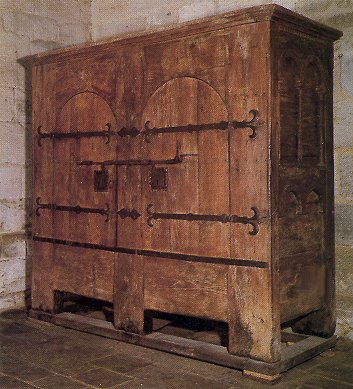
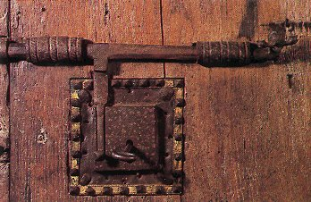

Dictionnaire raisonné du mobilier.
ARMOIRE
Notes et commentaires.

Figure 1

Dictionnaire raisonné du mobilier.
L'armoire d'Obazine (aujourd'hui Aubazine) est fort connue. Elle a été maintes fois décrite par plusieurs auteurs. Outre un aspect général, les deux photographies présentées ici permettront de remarquer que Viollet le Duc a dessiné le pêne du verrou de la serrure de l'armoire muni d'une surépaisseur qui n'existe pas en réalité.
 Figure 4 |
 |